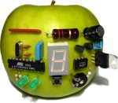

 AVR MacPack 20081213 |
OverviewWhat is AVR MacPack?AVR MacPack is a development environment for Atmel's AVR microcontrollers running on Apple's Mac OS X, similar to WinAVR for Windows. It consists of the GNU compiler suite, a C library for the AVR, the AVRDUDE uploader and several other useful tools. AVR MacPack always tracks the patch status of the latest WinAVR release.Features
Supported DevicesDevices supported by avr-gcc-3at43usb320, at43usb355, at76c711, at86rf401, at90c8534, at90can128, at90can32, at90can64, at90pwm2, at90pwm3, at90s1200, at90s2313, at90s2323, at90s2333, at90s2343, at90s4414, at90s4433, at90s4434, at90s8515, at90s8535, at90usb1286, at90usb1287, at90usb646, at90usb647, at94k, atmega103, atmega128, atmega1280, atmega1281, atmega16, atmega161, atmega162, atmega163, atmega164p, atmega165, atmega165p, atmega168, atmega169, atmega169p, atmega32, atmega323, atmega324p, atmega325, atmega3250, atmega329, atmega3290, atmega406, atmega48, atmega603, atmega64, atmega640, atmega644, atmega644p, atmega645, atmega6450, atmega649, atmega6490, atmega8, atmega8515, atmega8535, atmega88, attiny11, attiny12, attiny13, attiny15, attiny22, attiny2313, attiny24, attiny25, attiny26, attiny261, attiny28, attiny44, attiny45, attiny461, attiny84, attiny85, attiny861, avr1, avr2, avr3, avr4, avr5Devices supported by avr-gcc-4at43usb320, at43usb355, at76c711, at86rf401, at90c8534, at90can128, at90can32, at90can64, at90pwm1, at90pwm2, at90pwm216, at90pwm2b, at90pwm3, at90pwm316, at90pwm3b, at90s1200, at90s2313, at90s2323, at90s2333, at90s2343, at90s4414, at90s4433, at90s4434, at90s8515, at90s8535, at90usb1286, at90usb1287, at90usb162, at90usb646, at90usb647, at90usb82, at94k, atmega103, atmega128, atmega1280, atmega1281, atmega1284p, atmega16, atmega161, atmega162, atmega163, atmega164p, atmega165, atmega165p, atmega168, atmega168p, atmega169, atmega169p, atmega16hva, atmega2560, atmega2561, atmega32, atmega323, atmega324p, atmega325, atmega3250, atmega3250p, atmega325p, atmega328p, atmega329, atmega3290, atmega3290p, atmega329p, atmega32c1, atmega32m1, atmega32u4, atmega32u6, atmega406, atmega48, atmega48p, atmega64, atmega640, atmega644, atmega644p, atmega645, atmega6450, atmega649, atmega6490, atmega8, atmega8515, atmega8535, atmega88, atmega88p, atmega8hva, attiny11, attiny12, attiny13, attiny13a, attiny15, attiny167, attiny22, attiny2313, attiny24, attiny25, attiny26, attiny261, attiny28, attiny43u, attiny44, attiny45, attiny461, attiny48, attiny84, attiny85, attiny861, attiny88, atxmega128a1, atxmega128a3, atxmega256a3, atxmega256a3b, atxmega64a1, atxmega64a3, avr1, avr2, avr25, avr3, avr31, avr35, avr4, avr5, avr51, avr6, avrxmega4, avrxmega5, avrxmega6, avrxmega7Devices supported by the assembler avr-asat43usb320, at43usb355, at76c711, at86rf401, at90c8534, at90can128, at90can32, at90can64, at90pwm1, at90pwm2, at90pwm216, at90pwm2b, at90pwm3, at90pwm316, at90pwm3b, at90s1200, at90s2313, at90s2323, at90s2333, at90s2343, at90s4414, at90s4433, at90s4434, at90s8515, at90s8535, at90usb1286, at90usb1287, at90usb162, at90usb646, at90usb647, at90usb82, at94k, atmega103, atmega128, atmega1280, atmega1281, atmega1284p, atmega16, atmega161, atmega162, atmega163, atmega164p, atmega165, atmega165p, atmega168, atmega168p, atmega169, atmega169p, atmega16hva, atmega16u4, atmega2560, atmega2561, atmega32, atmega323, atmega324p, atmega325, atmega3250, atmega3250p, atmega325p, atmega328p, atmega329, atmega3290, atmega3290p, atmega329p, atmega32c1, atmega32m1, atmega32u4, atmega32u6, atmega406, atmega48, atmega48p, atmega64, atmega640, atmega644, atmega644p, atmega645, atmega6450, atmega649, atmega6490, atmega8, atmega8515, atmega8535, atmega88, atmega88p, atmega8hva, attiny11, attiny12, attiny13, attiny13a, attiny15, attiny167, attiny22, attiny2313, attiny24, attiny25, attiny26, attiny261, attiny28, attiny43u, attiny44, attiny45, attiny461, attiny48, attiny84, attiny85, attiny861, attiny88, atxmega128a1, atxmega128a3, atxmega256a3, atxmega256a3b, atxmega64a1, atxmega64a3, avr1, avr2, avr25, avr3, avr31, avr35, avr4, avr5, avr51, avr6, avrxmega1, avrxmega2, avrxmega3, avrxmega4, avrxmega5, avrxmega6, avrxmega7 |